<!DOCTYPE html>
<html lang="en">
  <head>
    <meta charset="utf-8" />
    <meta name="viewport" content="width=device-width, initial-scale=1.0, maximum-scale=1.0, user-scalable=no" />

    <title></title>
    <link rel="stylesheet" href="../include/dist/reveal.css" />
    <link rel="stylesheet" href="../include/dist/theme/white.css" id="theme" />
    <link rel="stylesheet" href="../include/css/vs2015.css" />
	<link rel="stylesheet" href="../include/css/layout.css" />
	<link rel="stylesheet" href="../include/plugin/customcontrols/style.css">
	<link rel="stylesheet" href="../include/plugin/chalkboard/style.css">


    <script defer src="../include/dist/fontawesome/all.min.js"></script>

	<script type="text/javascript">
		var forgetPop = true;
		function onPopState(event) {
			if(forgetPop){
				forgetPop = false;
			} else {
				parent.postMessage(event.target.location.href, "app://obsidian.md");
			}
        }
		window.onpopstate = onPopState;
		window.onmessage = event => {
			if(event.data == "reload"){
				window.document.location.reload();
			}
			forgetPop = true;
		}

		function fitElements(){
			const itemsToFit = document.getElementsByClassName('fitText');
			for (const item in itemsToFit) {
				if (Object.hasOwnProperty.call(itemsToFit, item)) {
					var element = itemsToFit[item];
					fitElement(element,1, 1000);
					element.classList.remove('fitText');
				}
			}
		}

		function fitElement(element, start, end){

			let size = (end + start) / 2;
			element.style.fontSize = `${size}px`;

			if(Math.abs(start - end) < 1){
				while(element.scrollHeight > element.offsetHeight){
					size--;
					element.style.fontSize = `${size}px`;
				}
				return;
			}

			if(element.scrollHeight > element.offsetHeight){
				fitElement(element, start, size);
			} else {
				fitElement(element, size, end);
			}		
		}


		document.onreadystatechange = () => {
			fitElements();
			if (document.readyState === 'complete') {
				if (window.location.href.indexOf("?export") != -1){
					parent.postMessage(event.target.location.href, "app://obsidian.md");
				}
				if (window.location.href.indexOf("print-pdf") != -1){
					let stateCheck = setInterval(() => {
						clearInterval(stateCheck);
						window.print();
					}, 250);
				}
			}
	};


        </script>
  </head>
  <body>
    <div class="reveal">
      <div class="slides"><section  data-markdown><script type="text/template"><!-- .slide: class="drop" -->
<div class="" style="position: absolute; left: 0px; top: 0px; height: 700px; width: 960px; min-height: 700px; display: flex; flex-direction: column; align-items: center; justify-content: center" absolute="true">

<style> .reveal {  font-size: 180%; line-height: 170%; } .reveal p {font-size:80%;} .reveal code {font-size:120%}</style>
# Séance 2
## Structures conditionnelles et boucles
</div></script></section><section  data-markdown><script type="text/template"><!-- .slide: class="drop" -->
<div class="" style="position: absolute; left: 0px; top: 0px; height: 700px; width: 960px; min-height: 700px; display: flex; flex-direction: column; align-items: center; justify-content: center" absolute="true">

## La dernière fois...

- &shy;<!-- .element: class="fragment" data-fragment-index="1" --> Afficher un message dans la console
	- &shy;<!-- .element: class="fragment" data-fragment-index="2" --> Instruction *cout*
- &shy;<!-- .element: class="fragment" data-fragment-index="3" --> Créer une variable
	- &shy;<!-- .element: class="fragment" data-fragment-index="4" -->int, float, double, bool
- &shy;<!-- .element: class="fragment" data-fragment-index="5" -->Récupérer une entrée clavier à l'exécution
	- &shy;<!-- .element: class="fragment" data-fragment-index="6" -->Instruction *cin*
- &shy;<!-- .element: class="fragment" data-fragment-index="7" -->Opérations sur les variables 
	- &shy;<!-- .element: class="fragment" data-fragment-index="8" -->+, -, *, /, %, = et plus
- &shy;<!-- .element: class="fragment" data-fragment-index="9" --> Conversion de type
- &shy;<!-- .element: class="fragment" data-fragment-index="10" --> Commentaires 

</div></script></section><section  data-markdown><script type="text/template"><!-- .slide: class="drop" -->
<div class="" style="position: absolute; left: 0px; top: 0px; height: 700px; width: 960px; min-height: 700px; display: flex; flex-direction: column; align-items: center; justify-content: center" absolute="true">

# Les structures conditionnelles

</div></script></section><section  data-markdown><script type="text/template"><!-- .slide: class="drop" -->
<div class="" style="position: absolute; left: 0px; top: 0px; height: 700px; width: 960px; min-height: 700px; display: flex; flex-direction: column; align-items: center; justify-content: center" absolute="true">

## Un peu de vocabulaire...

<div class="callout callout-color1">
<div class="callout-title">
<div class="callout-icon">
<i class="fas fa-info-circle" ></i>
</div>
<div class="callout-title-inner">
Opérateur logique
</div>
</div>
<div class="callout-content">
Opérateur agissant sur des valeurs ou des variables et renvoyant un résultat booléen (bool)
</div>
</div>

<div class="callout callout-color1">
<div class="callout-title">
<div class="callout-icon">
<i class="fas fa-info-circle" ></i>
</div>
<div class="callout-title-inner">
Expression logique / conditionnelle, ou condition
</div>
</div>
<div class="callout-content">
Résultat de l'action d'un opérateur logique agissant sur deux valeurs ou variables
</div>
</div>

</div></script></section><section  data-markdown><script type="text/template"><!-- .slide: class="drop" -->
<div class="" style="position: absolute; left: 0px; top: 0px; height: 700px; width: 960px; min-height: 700px; display: flex; flex-direction: column; align-items: center; justify-content: center" absolute="true">


| **Opérateur logique** | **Signification**  | **Négation**                                                |
| ----------- | ------------------ | ------------------------------------------------------ |
| a < b       | a **inférieur** à b                | a >= b          |
| a <= b  | a **inférieur ou égal** à b               | a > b |
| a > b       | a **supérieur** à b           | a <= b |
| a >= b      | a **supérieur ou égal** à b     | a < b |
| a == b      | a **équivalent** à b     | a != b |
| a != b      | a **différent** de b     | a == b |

</div></script></section><section  data-markdown><script type="text/template"><!-- .slide: class="drop" -->
<div class="" style="position: absolute; left: 0px; top: 0px; height: 700px; width: 960px; min-height: 700px; display: flex; flex-direction: column; align-items: center; justify-content: center" absolute="true">

## Exemple : empêcher une division par 0
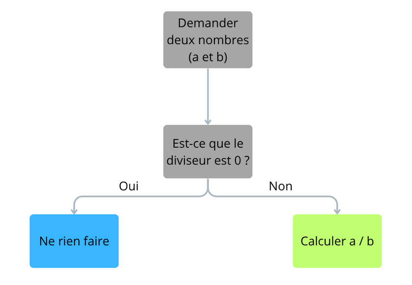

</div></script></section><section  data-markdown><script type="text/template"><!-- .slide: class="drop" -->
<div class="" style="position: absolute; left: 0px; top: 0px; height: 700px; width: 960px; min-height: 700px; display: flex; flex-direction: column; align-items: center; justify-content: center" absolute="true">

## Exemple : empêcher une division par 0
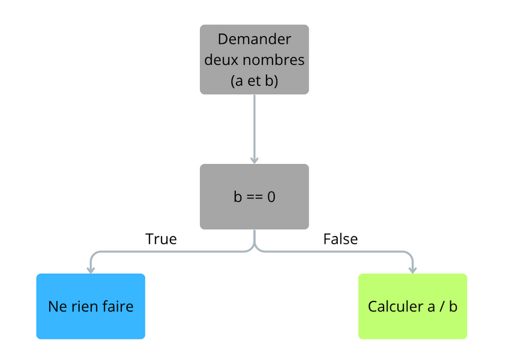

</div></script></section><section  data-markdown><script type="text/template"><!-- .slide: class="drop" -->
<div class="" style="position: absolute; left: 0px; top: 0px; height: 700px; width: 960px; min-height: 700px; display: flex; flex-direction: column; align-items: center; justify-content: center" absolute="true">

## Exemple : empêcher une division par 0
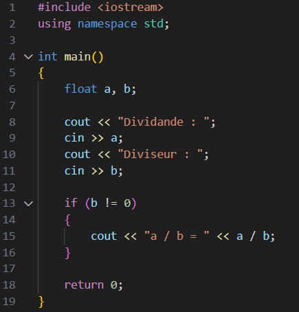

Le bloc *if* est exécuté si la condition est remplie

</div></script></section><section  data-markdown><script type="text/template"><!-- .slide: class="drop" -->
<div class="" style="position: absolute; left: 0px; top: 0px; height: 700px; width: 960px; min-height: 700px; display: flex; flex-direction: column; align-items: center; justify-content: center" absolute="true">

## Deux résultats possibles

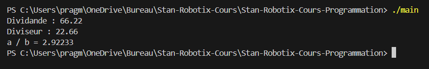
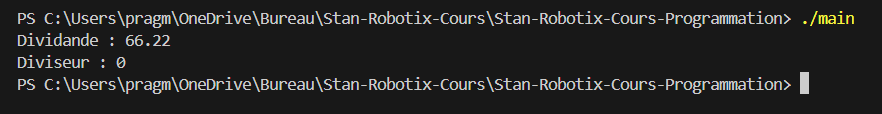

</div></script></section><section  data-markdown><script type="text/template"><!-- .slide: class="drop" -->
<div class="" style="position: absolute; left: 0px; top: 0px; height: 700px; width: 960px; min-height: 700px; display: flex; flex-direction: column; align-items: center; justify-content: center" absolute="true">

## Gérer le cas où la condition n'est pas remplie

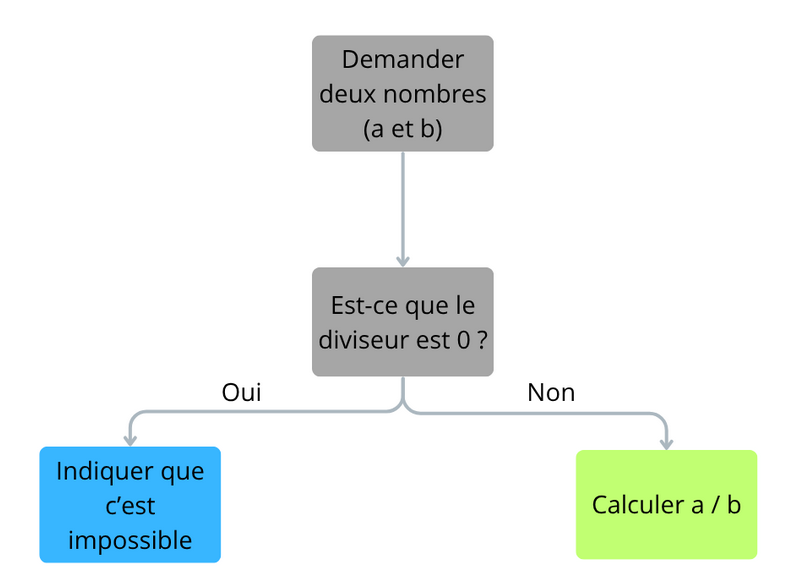

</div></script></section><section  data-markdown><script type="text/template"><!-- .slide: class="drop" -->
<div class="" style="position: absolute; left: 0px; top: 0px; height: 700px; width: 960px; min-height: 700px; display: flex; flex-direction: column; align-items: center; justify-content: center" absolute="true">

## Gérer le cas où la condition n'est pas remplie

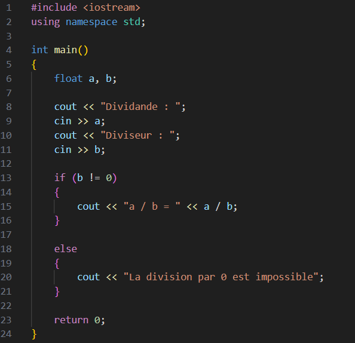

</div></script></section><section  data-markdown><script type="text/template"><!-- .slide: class="drop" -->
<div class="" style="position: absolute; left: 0px; top: 0px; height: 700px; width: 960px; min-height: 700px; display: flex; flex-direction: column; align-items: center; justify-content: center" absolute="true">

## Gérer le cas où la condition n'est pas remplie

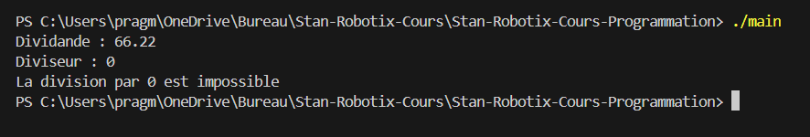

</div></script></section><section  data-markdown><script type="text/template"><!-- .slide: class="drop" -->
<div class="" style="position: absolute; left: 0px; top: 0px; height: 700px; width: 960px; min-height: 700px; display: flex; flex-direction: column; align-items: center; justify-content: center" absolute="true">

## Et / ou logiques

| a | b  | a && b                                                |
| ----------- | ------------------ | ------------------------------------------------------ |
| false       | false                | false          |
| false  | true               | false |
| true  | true               | false |
| true  | true               | true |


| a | b  | a \|\| b                                                |
| ----------- | ------------------ | ------------------------------------------------------ |
| false       | false                | false          |
| false  | true               | true |
| true  | true               | true |
| true  | true               | true |

</div></script></section><section  data-markdown><script type="text/template"><!-- .slide: class="drop" -->
<div class="" style="position: absolute; left: 0px; top: 0px; height: 700px; width: 960px; min-height: 700px; display: flex; flex-direction: column; align-items: center; justify-content: center" absolute="true">

## Négation

| a | !a                                                 |
| ----------- | ------------------ |
| false       | true                |
| true  | false               |

</div></script></section><section  data-markdown><script type="text/template"><!-- .slide: class="drop" -->
<div class="" style="position: absolute; left: 0px; top: 0px; height: 700px; width: 960px; min-height: 700px; display: flex; flex-direction: column; align-items: center; justify-content: center" absolute="true">

## Exemple : vérifier si un nombre est entre 1 et 100 (inclus)
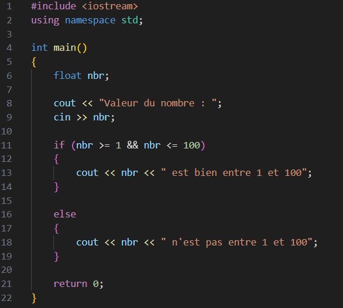

</div></script></section><section  data-markdown><script type="text/template"><!-- .slide: class="drop" -->
<div class="" style="position: absolute; left: 0px; top: 0px; height: 700px; width: 960px; min-height: 700px; display: flex; flex-direction: column; align-items: center; justify-content: center" absolute="true">

## Exercice : adapter ce diagramme en programme

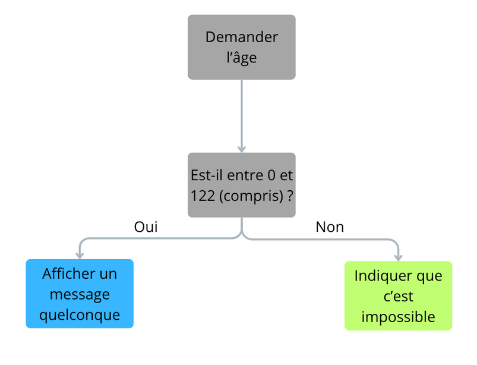

</div></script></section><section  data-markdown><script type="text/template"><!-- .slide: class="drop" -->
<div class="" style="position: absolute; left: 0px; top: 0px; height: 700px; width: 960px; min-height: 700px; display: flex; flex-direction: column; align-items: center; justify-content: center" absolute="true">

## Réponse

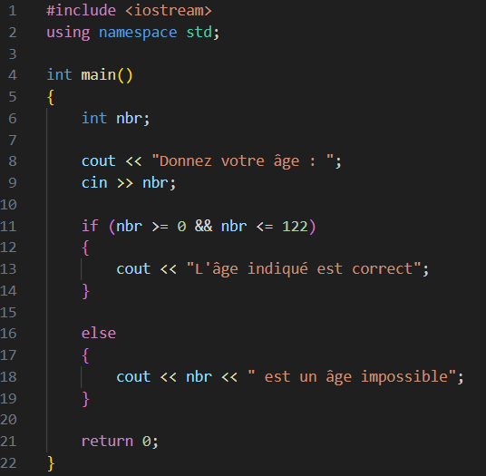

</div></script></section><section  data-markdown><script type="text/template"><!-- .slide: class="drop" -->
<div class="" style="position: absolute; left: 0px; top: 0px; height: 700px; width: 960px; min-height: 700px; display: flex; flex-direction: column; align-items: center; justify-content: center" absolute="true">

## Gérer des conditions à plus que deux états

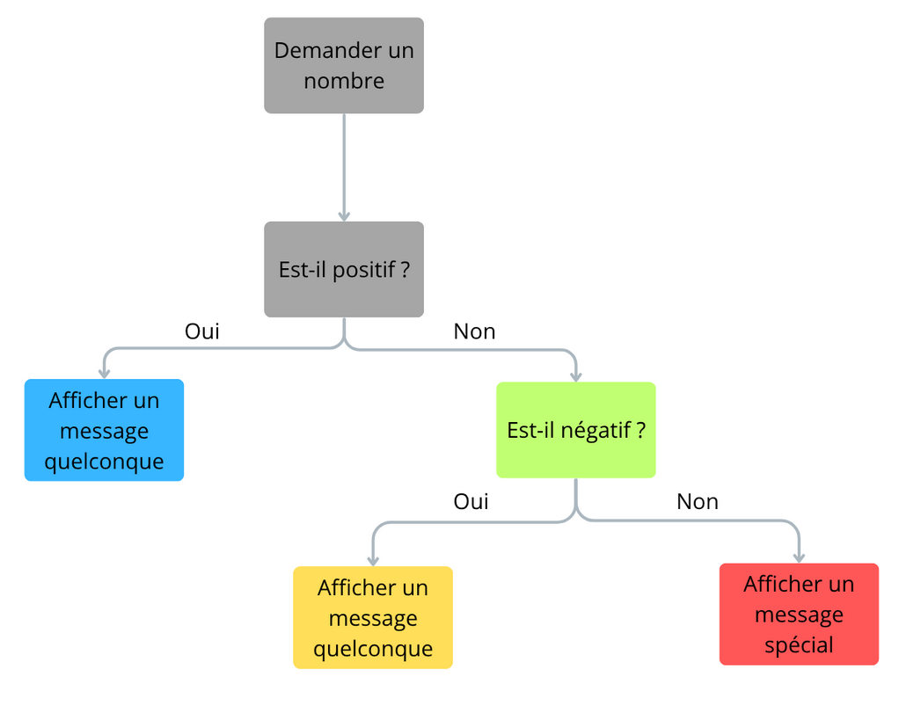

</div></script></section><section  data-markdown><script type="text/template"><!-- .slide: class="drop" -->
<div class="" style="position: absolute; left: 0px; top: 0px; height: 700px; width: 960px; min-height: 700px; display: flex; flex-direction: column; align-items: center; justify-content: center" absolute="true">

## Gérer des conditions à plus que deux états

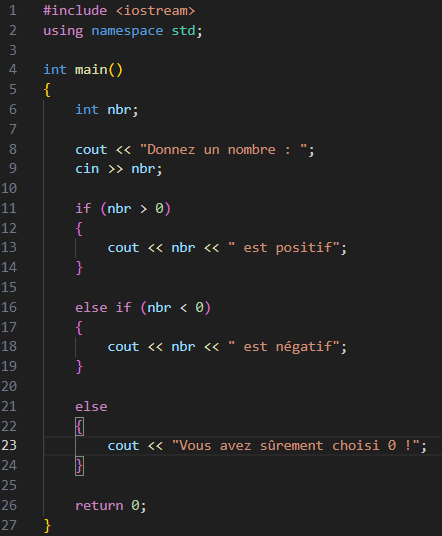

</div></script></section><section  data-markdown><script type="text/template"><!-- .slide: class="drop" -->
<div class="" style="position: absolute; left: 0px; top: 0px; height: 700px; width: 960px; min-height: 700px; display: flex; flex-direction: column; align-items: center; justify-content: center" absolute="true">

## Autre manière de faire

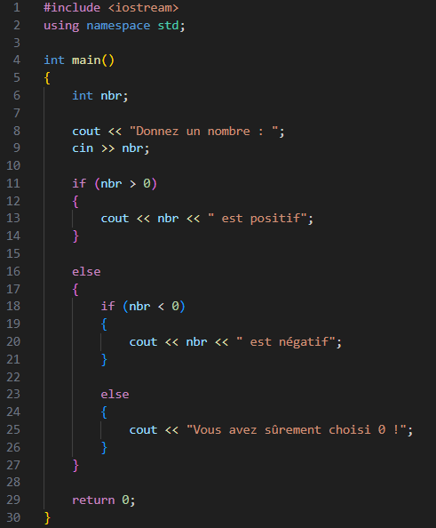
</div></script></section><section  data-markdown><script type="text/template"><!-- .slide: class="drop" -->
<div class="" style="position: absolute; left: 0px; top: 0px; height: 700px; width: 960px; min-height: 700px; display: flex; flex-direction: column; align-items: center; justify-content: center" absolute="true">


<div class="callout callout-color1">
<div class="callout-title">
<div class="callout-icon">
<i class="fas fa-clipboard-list" ></i>
</div>
<div class="callout-title-inner">
Quelle méthode choisir ?
</div>
</div>
<div class="callout-content">
On préfère généralement limiter le nombre de blocs imbriqués les uns dans les autres 
</div>
</div>

</div></script></section><section  data-markdown><script type="text/template"><!-- .slide: class="drop" -->
<div class="" style="position: absolute; left: 0px; top: 0px; height: 700px; width: 960px; min-height: 700px; display: flex; flex-direction: column; align-items: center; justify-content: center" absolute="true">

## Créer un nombre arbitraire d'états

- &shy;<!-- .element: class="fragment" data-fragment-index="1" -->Les énumérations (enum) permettent de créer de nouveaux types de variable
- &shy;<!-- .element: class="fragment" data-fragment-index="2" -->Valeurs possibles finies
- &shy;<!-- .element: class="fragment" data-fragment-index="3" -->Utiles pour des machines à états et faciliter la compréhension

</div></script></section><section  data-markdown><script type="text/template"><!-- .slide: class="drop" -->
<div class="" style="position: absolute; left: 0px; top: 0px; height: 700px; width: 960px; min-height: 700px; display: flex; flex-direction: column; align-items: center; justify-content: center" absolute="true">

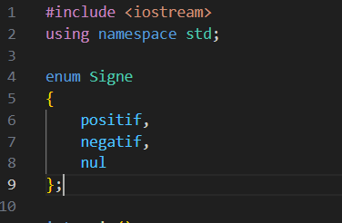

L'enum se place avant le *main*

<div class="callout callout-color1">
<div class="callout-title">
<div class="callout-icon">
<i class="fas fa-clipboard-list" ></i>
</div>
<div class="callout-title-inner">
Attention
</div>
</div>
<div class="callout-content">
Ne pas oublier le point-virgule après la dernière accolade
</div>
</div>

</div></script></section><section  data-markdown><script type="text/template"><!-- .slide: class="drop" -->
<div class="" style="position: absolute; left: 0px; top: 0px; height: 700px; width: 960px; min-height: 700px; display: flex; flex-direction: column; align-items: center; justify-content: center" absolute="true">

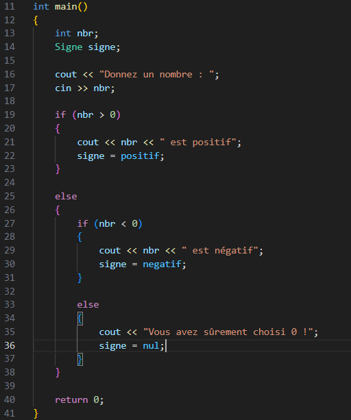

Signe est devenu un nouveau type et postif, negatif et nul ses trois valeurs possibles

</div></script></section><section  data-markdown><script type="text/template"><!-- .slide: class="drop" -->
<div class="" style="position: absolute; left: 0px; top: 0px; height: 700px; width: 960px; min-height: 700px; display: flex; flex-direction: column; align-items: center; justify-content: center" absolute="true">

## Gérer des états avec un *switch-case*

- &shy;<!-- .element: class="fragment" data-fragment-index="1" -->Pour tester des égalités sur plusieurs valeurs différentes
	- &shy;<!-- .element: class="fragment" data-fragment-index="2" -->Ne fonctionne qu'avec des int ou des types créés à partir d'enum
- &shy;<!-- .element: class="fragment" data-fragment-index="3" -->Plus rapide qu'une chaîne de *if*, *else-if*, *else-if*..., *else*

</div></script></section><section  data-markdown><script type="text/template"><!-- .slide: class="drop" -->
<div class="" style="position: absolute; left: 0px; top: 0px; height: 700px; width: 960px; min-height: 700px; display: flex; flex-direction: column; align-items: center; justify-content: center" absolute="true">

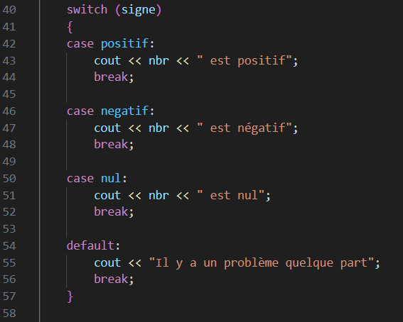

- &shy;<!-- .element: class="fragment" data-fragment-index="1" -->Chaque état est géré avec l'instruction *case*
	- &shy;<!-- .element: class="fragment" data-fragment-index="2" -->Le code a exécuter dans chaque cas doit être terminé par un *break*
- &shy;<!-- .element: class="fragment" data-fragment-index="3" -->Le cas *default* est utilisé pour géré un cas non prévu

</div></script></section><section  data-markdown><script type="text/template"><!-- .slide: class="drop" -->
<div class="" style="position: absolute; left: 0px; top: 0px; height: 700px; width: 960px; min-height: 700px; display: flex; flex-direction: column; align-items: center; justify-content: center" absolute="true">

## Exercice : adapter ce diagramme en programme

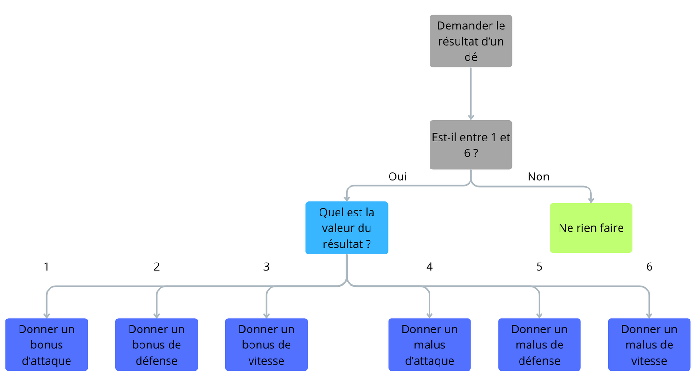

</div></script></section><section  data-markdown><script type="text/template"><!-- .slide: class="drop" -->
<div class="" style="position: absolute; left: 0px; top: 0px; height: 700px; width: 960px; min-height: 700px; display: flex; flex-direction: column; align-items: center; justify-content: center" absolute="true">

## Réponse

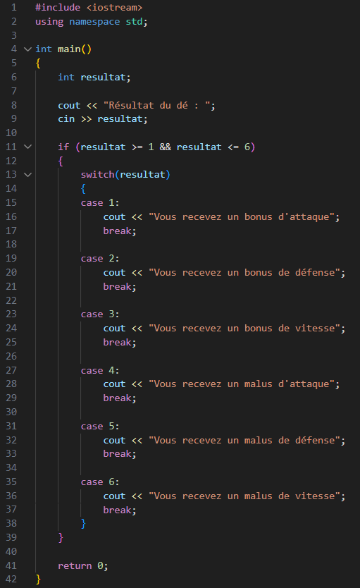

</div></script></section><section  data-markdown><script type="text/template"><!-- .slide: class="drop" -->
<div class="" style="position: absolute; left: 0px; top: 0px; height: 700px; width: 960px; min-height: 700px; display: flex; flex-direction: column; align-items: center; justify-content: center" absolute="true">

<div class="callout callout-color1">
<div class="callout-title">
<div class="callout-icon">
<i class="fas fa-clipboard-list" ></i>
</div>
<div class="callout-title-inner">
Attention
</div>
</div>
<div class="callout-content">
<i>default</i> n'était pas nécessaire car on s'était déjà assuré que le nombre était entre 1 et 6
</div>
</div>

</div></script></section><section  data-markdown><script type="text/template"><!-- .slide: class="drop" -->
<div class="" style="position: absolute; left: 0px; top: 0px; height: 700px; width: 960px; min-height: 700px; display: flex; flex-direction: column; align-items: center; justify-content: center" absolute="true">

# Les boucles
### &shy;<!-- .element: class="fragment" data-fragment-index="1" --> Pour faire une action plusieurs fois

</div></script></section><section  data-markdown><script type="text/template"><!-- .slide: class="drop" -->
<div class="" style="position: absolute; left: 0px; top: 0px; height: 700px; width: 960px; min-height: 700px; display: flex; flex-direction: column; align-items: center; justify-content: center" absolute="true">

## Exemple : afficher 10 fois « Bonjour »

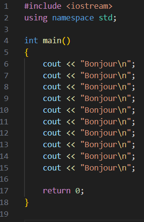

&shy; <!-- .element: class="fragment" data-fragment-index="1" --> C'est pas terrible...

</div></script></section><section  data-markdown><script type="text/template"><!-- .slide: class="drop" -->
<div class="" style="position: absolute; left: 0px; top: 0px; height: 700px; width: 960px; min-height: 700px; display: flex; flex-direction: column; align-items: center; justify-content: center" absolute="true">

## Solution : boucle *for*
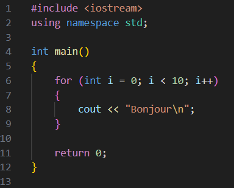

</div></script></section><section  data-markdown><script type="text/template"><!-- .slide: class="drop" -->
<div class="" style="position: absolute; left: 0px; top: 0px; height: 700px; width: 960px; min-height: 700px; display: flex; flex-direction: column; align-items: center; justify-content: center" absolute="true">

## Solution : boucle *for*

- &shy; <!-- .element: class="fragment" data-fragment-index="1" -->Boucle **bornée**
	- &shy; <!-- .element: class="fragment" data-fragment-index="2" -->On sait combien de fois elle est itérée
- &shy; <!-- .element: class="fragment" data-fragment-index="3" -->i est la variable d'itération
	- &shy; <!-- .element: class="fragment" data-fragment-index="4" -->Elle est accessible dans la boucle !
- &shy; <!-- .element: class="fragment" data-fragment-index="5" -->L'en-tête de la boucle est composée de 3 parties :
	- &shy; <!-- .element: class="fragment" data-fragment-index="6" -->L'initialisation de i (valeur de départ)
	- &shy; <!-- .element: class="fragment" data-fragment-index="7" -->La condition à vérifier **au début** de chaque itération
	- &shy; <!-- .element: class="fragment" data-fragment-index="8" -->L'action à effectuer sur i à la fin de chaque itération
</div></script></section><section  data-markdown><script type="text/template"><!-- .slide: class="drop" -->
<div class="" style="position: absolute; left: 0px; top: 0px; height: 700px; width: 960px; min-height: 700px; display: flex; flex-direction: column; align-items: center; justify-content: center" absolute="true">

<div class="callout callout-color1">
<div class="callout-title">
<div class="callout-icon">
<i class="fas fa-info-circle" ></i>
</div>
<div class="callout-title-inner">
Itération
</div>
</div>
<div class="callout-content">
Passage dans la boucle
</div>
</div>

</div></script></section><section  data-markdown><script type="text/template"><!-- .slide: class="drop" -->
<div class="" style="position: absolute; left: 0px; top: 0px; height: 700px; width: 960px; min-height: 700px; display: flex; flex-direction: column; align-items: center; justify-content: center" absolute="true">

## Exemple : afficher les 100 premiers nombres entiers

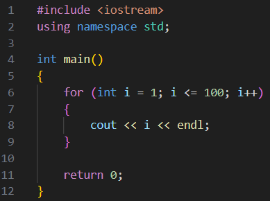

</div></script></section><section  data-markdown><script type="text/template"><!-- .slide: class="drop" -->
<div class="" style="position: absolute; left: 0px; top: 0px; height: 700px; width: 960px; min-height: 700px; display: flex; flex-direction: column; align-items: center; justify-content: center" absolute="true">

## Exemple : afficher les 100 premiers nombres pairs

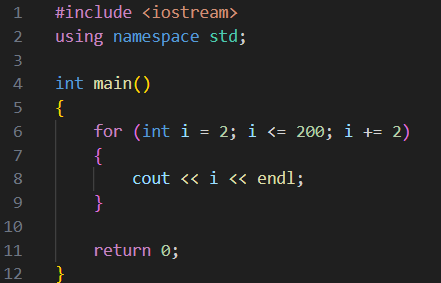

</div></script></section><section  data-markdown><script type="text/template"><!-- .slide: class="drop" -->
<div class="" style="position: absolute; left: 0px; top: 0px; height: 700px; width: 960px; min-height: 700px; display: flex; flex-direction: column; align-items: center; justify-content: center" absolute="true">

## Exercice : afficher tous les nombres entre 1 et 100 (inclus) divisibles par 3 ou 5 ou 8

- &shy; <!-- .element: class="fragment" data-fragment-index="1" --> Indice 1 : trouvez l'action à effectuer 100 fois
- &shy; <!-- .element: class="fragment" data-fragment-index="2" --> Indice 2 : on vérifie la divisibilité d'un nombre avec %

</div></script></section><section  data-markdown><script type="text/template"><!-- .slide: class="drop" -->
<div class="" style="position: absolute; left: 0px; top: 0px; height: 700px; width: 960px; min-height: 700px; display: flex; flex-direction: column; align-items: center; justify-content: center" absolute="true">

## Réponse

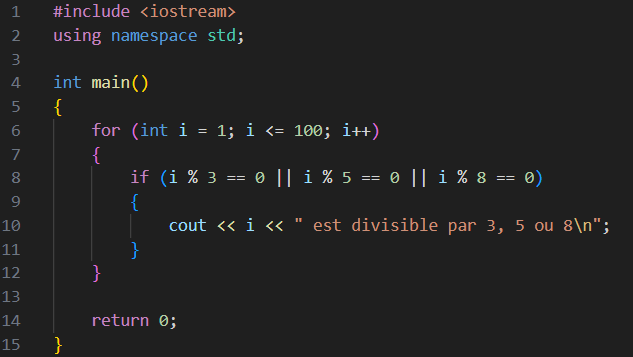

</div></script></section><section  data-markdown><script type="text/template"><!-- .slide: class="drop" -->
<div class="" style="position: absolute; left: 0px; top: 0px; height: 700px; width: 960px; min-height: 700px; display: flex; flex-direction: column; align-items: center; justify-content: center" absolute="true">

## Boucle non bornée

- &shy; <!-- .element: class="fragment" data-fragment-index="1" --> On ne connait pas à l'avance le nombre d'itérations
- &shy; <!-- .element: class="fragment" data-fragment-index="2" --> Utile quand la condition à vérifier est un état à atteindre ou quitter

</div></script></section><section  data-markdown><script type="text/template"><!-- .slide: class="drop" -->
<div class="" style="position: absolute; left: 0px; top: 0px; height: 700px; width: 960px; min-height: 700px; display: flex; flex-direction: column; align-items: center; justify-content: center" absolute="true">

## Exemple : afficher les 100 premiers nombres divisibles par 3, 5 ou 8

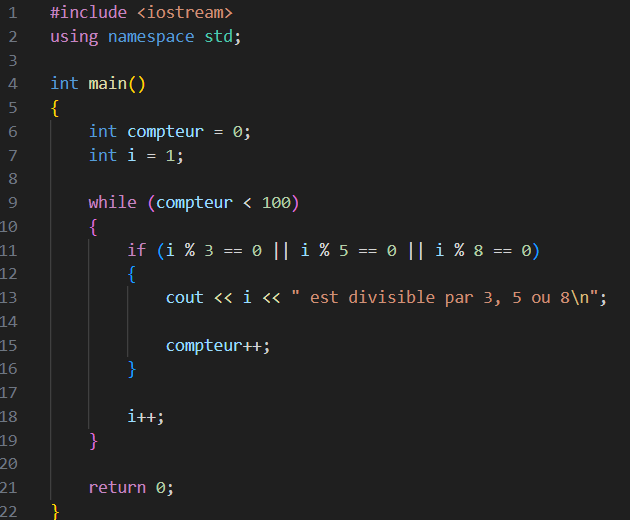

</div></script></section><section  data-markdown><script type="text/template"><!-- .slide: class="drop" -->
<div class="" style="position: absolute; left: 0px; top: 0px; height: 700px; width: 960px; min-height: 700px; display: flex; flex-direction: column; align-items: center; justify-content: center" absolute="true">

## Ajouter une condition d'arrêt supplémentaire, hors de l'en-tête

- Utiliser l'instruction *break* dans un bloc *if*

</div></script></section><section  data-markdown><script type="text/template"><!-- .slide: class="drop" -->
<div class="" style="position: absolute; left: 0px; top: 0px; height: 700px; width: 960px; min-height: 700px; display: flex; flex-direction: column; align-items: center; justify-content: center" absolute="true">

## Exemple : afficher les 100 premiers nombres divisibles par 3, 5 ou 8, mais arrêter si le nombre dépasse 150

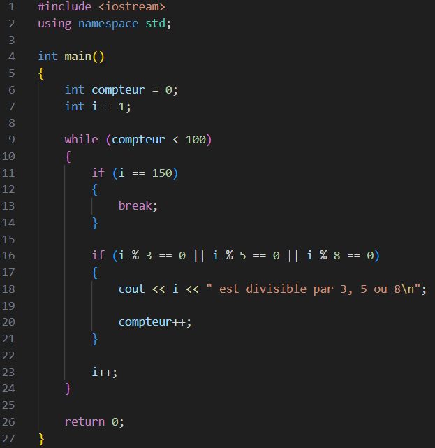

</div></script></section><section  data-markdown><script type="text/template"><!-- .slide: class="drop" -->
<div class="" style="position: absolute; left: 0px; top: 0px; height: 700px; width: 960px; min-height: 700px; display: flex; flex-direction: column; align-items: center; justify-content: center" absolute="true">

## Le faire sans l'instruction *break*

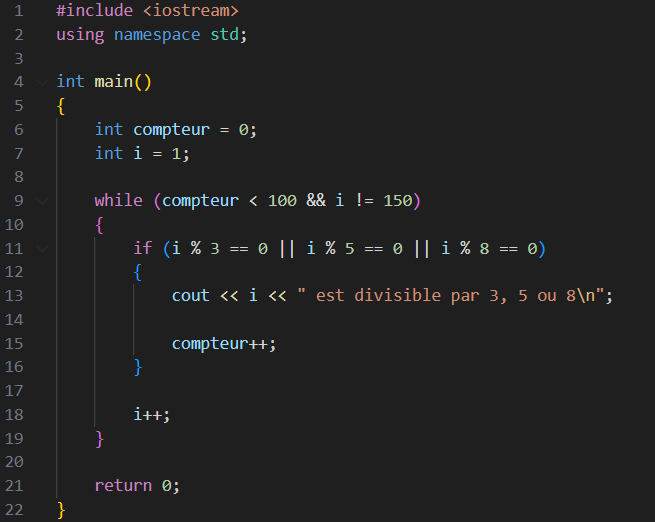

</div></script></section><section  data-markdown><script type="text/template"><!-- .slide: class="drop" -->
<div class="" style="position: absolute; left: 0px; top: 0px; height: 700px; width: 960px; min-height: 700px; display: flex; flex-direction: column; align-items: center; justify-content: center" absolute="true">

## Quand l'utiliser ?

- &shy; <!-- .element: class="fragment" data-fragment-index="1" --> Surtout dans les boucles *for*

</div></script></section><section  data-markdown><script type="text/template"><!-- .slide: class="drop" -->
<div class="" style="position: absolute; left: 0px; top: 0px; height: 700px; width: 960px; min-height: 700px; display: flex; flex-direction: column; align-items: center; justify-content: center" absolute="true">

## Exercice : adapter ce diagramme en programme

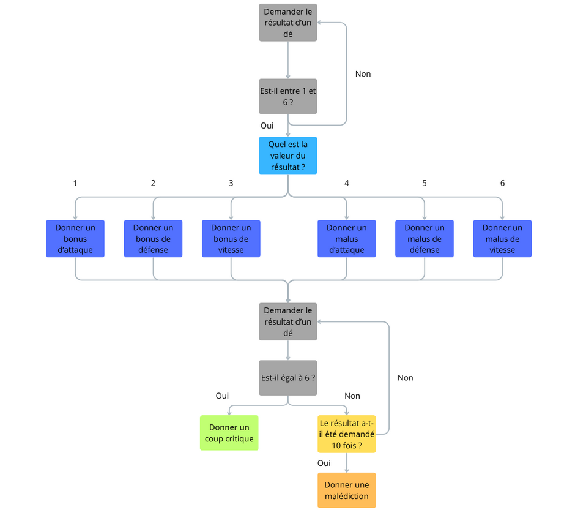

</div></script></section><section  data-markdown><script type="text/template"><!-- .slide: class="drop" -->
<div class="" style="position: absolute; left: 0px; top: 0px; height: 700px; width: 960px; min-height: 700px; display: flex; flex-direction: column; align-items: center; justify-content: center" absolute="true">

## Réponse (partie 1)

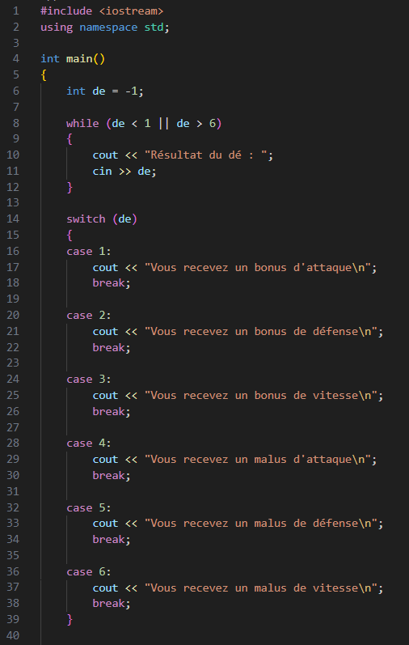

</div></script></section><section  data-markdown><script type="text/template"><!-- .slide: class="drop" -->
<div class="" style="position: absolute; left: 0px; top: 0px; height: 700px; width: 960px; min-height: 700px; display: flex; flex-direction: column; align-items: center; justify-content: center" absolute="true">

## Réponse (partie 2)

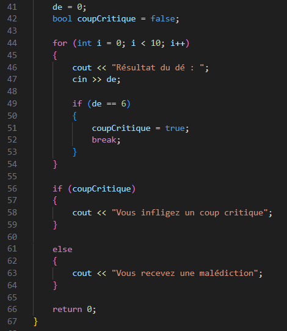

</div></script></section>
</section></div>
    </div>

    <script src="../include/dist/reveal.js"></script>

    <script src="../include/plugin/markdown/markdown.js"></script>
    <script src="../include/plugin/highlight/highlight.js"></script>
    <script src="../include/plugin/zoom/zoom.js"></script>
    <script src="../include/plugin/notes/notes.js"></script>
    <script src="../include/plugin/math/math.js"></script>
	<script src="../include/plugin/mermaid/mermaid.js"></script>
	<script src="../include/plugin/chart/chart.min.js"></script>
	<script src="../include/plugin/chart/plugin.js"></script>
	<script src="../include/plugin/customcontrols/plugin.js"></script>
	<script src="../include/plugin/chalkboard/plugin.js"></script>

    <script>
      function extend() {
        var target = {};
        for (var i = 0; i < arguments.length; i++) {
          var source = arguments[i];
          for (var key in source) {
            if (source.hasOwnProperty(key)) {
              target[key] = source[key];
            }
          }
        }
        return target;
      }

	  function isLight(color) {
		let hex = color.replace('#', '');

		// convert #fff => #ffffff
		if(hex.length == 3){
			hex = `${hex[0]}${hex[0]}${hex[1]}${hex[1]}${hex[2]}${hex[2]}`;
		}

		const c_r = parseInt(hex.substr(0, 2), 16);
		const c_g = parseInt(hex.substr(2, 2), 16);
		const c_b = parseInt(hex.substr(4, 2), 16);
		const brightness = ((c_r * 299) + (c_g * 587) + (c_b * 114)) / 1000;
		return brightness > 155;
	}

	var bgColor = getComputedStyle(document.documentElement).getPropertyValue('--r-background-color').trim();
	var isLight = isLight(bgColor);

	if(isLight){
		document.body.classList.add('has-light-background');
	} else {
		document.body.classList.add('has-dark-background');
	}

      // default options to init reveal.js
      var defaultOptions = {
        controls: true,
        progress: true,
        history: true,
        center: true,
        transition: 'default', // none/fade/slide/convex/concave/zoom
        plugins: [
          RevealMarkdown,
          RevealHighlight,
          RevealZoom,
          RevealNotes,
          RevealMath.MathJax3,
		  RevealMermaid,
		  RevealChart,
		  RevealCustomControls,
		  RevealChalkboard, 
        ],


    	allottedTime: 120 * 1000,

		mathjax3: {
			mathjax: '../include/plugin/math/mathjax/tex-mml-chtml.js',
		},
		markdown: {
		  gfm: true,
		  mangle: true,
		  pedantic: false,
		  smartLists: false,
		  smartypants: false,
		},

		mermaid: {
			theme: isLight ? 'default' : 'dark',
		},

		customcontrols: {
			controls: [
				{id: 'toggle-overview',
				title: 'Toggle overview (O)',
				icon: '<i class="fa fa-th"></i>',
				action: 'Reveal.toggleOverview();'
				},
				{ icon: '<i class="fa fa-pen-square"></i>',
				title: 'Toggle chalkboard (B)',
				action: 'RevealChalkboard.toggleChalkboard();'
				},
				{ icon: '<i class="fa fa-pen"></i>',
				title: 'Toggle notes canvas (C)',
				action: 'RevealChalkboard.toggleNotesCanvas();'
				},
				{ icon: '<i class="fa fa-home" onclick = "window.location.href = \'../index.html\';"></i>',
				title: 'Page d\'accueil',
				action: ''
				},
			]
		},
      };

      // options from URL query string
      var queryOptions = Reveal().getQueryHash() || {};

      var options = extend(defaultOptions, {"width":960,"height":700,"margin":0.04,"controls":true,"progress":true,"slideNumber":false,"transition":"slide","transitionSpeed":"normal"}, queryOptions);
    </script>

    <script>
      Reveal.initialize(options);
    </script>
  </body>

  <!-- created with Advanced Slides -->
</html>
